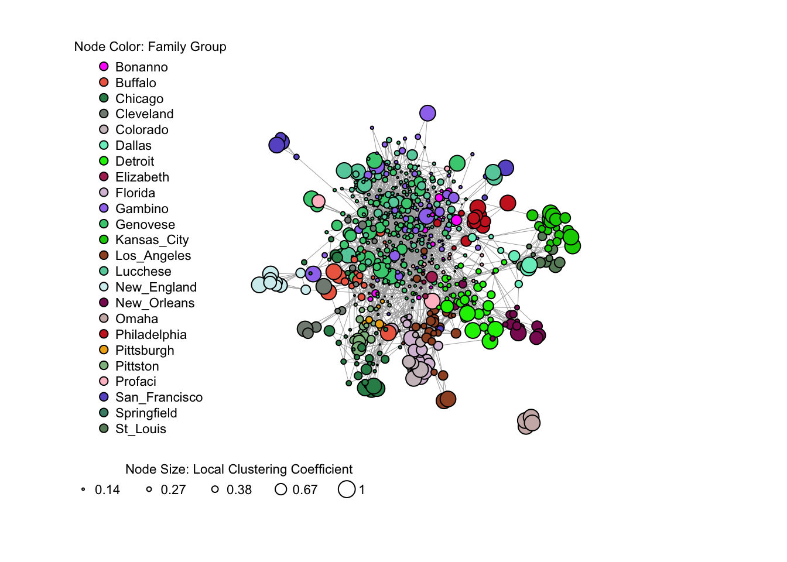

Chapter 2 Network Metrics
In this chapter, we introduce the following topics:
- Data formats of network data
- Network metrics for nodes and edges
- How to visualize an igraph network graph
We only introduce basic concepts here for reference. If you want to learn more about visualizing abstractions of networks (which are not geographically embedded) and network metrics, Katherine Ognyanova has an awesome tutorial here.
2.1 Network Data Formats
Nodes and edges are the two key components of a network. Nodes may also refer as vertices (vertex for singular). There are two common data formats to store data for nodes and edges. The first one is an adjacency matrix (see 2.1 as an example), and the second one is a node table and an edge list (see 2.2 and 2.3 as an example). In a node table, one row contains all the attributes (e.g., degree, coordinates, values) for one node. In an edge table, one row represents an edge pair and all the attributes associated with the edge (e.g., weight). The following examples show data formats for a network using remittance data between China, Mexico, and Canada.
| China | Mexico | Canada | |
|---|---|---|---|
| China | 0 | 48520 | 4144020 |
| Mexico | 2520 | 0 | 155790 |
| Canada | 19650 | 8980 | 0 |
| Node_id | Country_name | Population_estimate | Longitude | Latitude |
|---|---|---|---|---|
| 1 | China | 1338612970 | 103.11 | 35.69 |
| 2 | Mexico | 111211789 | -102.18 | 23.73 |
| 3 | Canada | 33487208 | -96.09 | 57.89 |
| Edge_id | Origin | Destination | Remittance |
|---|---|---|---|
| 1 | China | China | 0 |
| 2 | China | Mexico | 2520 |
| 3 | China | Canada | 19650 |
| 4 | Mexico | China | 48520 |
| 5 | Mexico | Mexico | 0 |
| 6 | Mexico | Canada | 8980 |
| 7 | Canada | China | 4144020 |
| 8 | Canada | Mexico | 155790 |
| 9 | Canada | Canada | 0 |
2.2 Network Metrics
igraph package provides functions that calculate a few network metrics for nodes and edges in an network. It can construct a network from the two common data formats: using graph_from_data_frame with a node table and an edgelist (edgelist alone works too) or graph_from_incident_matrix with an adjacency matrix.
g = graph_from_data_frame(YOUR_EDGELIST, directed=TRUE)
g = graph_from_data_frame(YOUR_EDGELIST, vertices=YOUR_NODETABLE, directed=TRUE)
g = graph_from_incident_matrix(YOUR_MATRIX, directed=TRUE)Here are some common network metrics that are used to measure properties of nodes, edges, and network structure as a whole:
2.2.1 Network Metrics for Nodes
Degree: measures the total connections of a node, regardless of the direction of the connections.
In Degree measures the total connections that flow to a node.
Out Degree measures the total connections that flow out from a node.
Weighted Degree measures the sum of the edge weights to a node, which is correlated with the degree of a node but weighted. The weighted in degree and weighted out degree use the same code, but change the mode to “in” and “out”.
#Edgelist should include weight column for the code to work.
V(g)$weighted_degree = strength(g, v=V(g), mode=c('all')) #add weighted degree to nodes in the network gCloseness Centrality measures the closeness of one node to all other nodes in the network. A high value means that a node, on average, can reach all other nodes in a few steps. It is calculated as the reciprocal of the sum of the length of the shortest path between a node and all other nodes in the graph.
V(g)$closeness_centrality = closeness(g, vids=V(g), mode='in') #add closeness centrality (mode = 'in' uses in degree as paths to a node) to nodes in the network gBetweenness Centrality measures the importance of a node in calculating the shortests paths of all nodes in a network. A high value means that a node, if removed from the network, will make the shortest path calculation longer for many other nodes in the network. It is calculated as the number of shortest paths that pass through the node.
V(g)$betweenness_centrality = betweenness(g, v=V(g), directed=TRUE) #add betweenness centrality to nodes in the network gEigenvector Centrality measures the influence a node has on a network. A node has high influence if it is connected to many nodes who themselves have high influences.
V(g)$eigenvector_centrality = eigen_centrality(g, directed=TRUE) #add eigenvector centrality to nodes in the network g(Local) Clustering Coefficient measures how close the neighbors of a node all connect to each other, and thus how embedded a node is in its local networks. It is also called the local clustering coefficient.
V(g)$clustering_coefficient = transitivity(g, type='local') #add local clustering coefficient to nodes in the network gEccentricity measures the shortest path distance to the farthest other node in the network.
V(g)$eccentricity = eccentricity(g, vids=V(g), mode=c('all')) #add eccentricity to nodes (path calculated as undirected) in the network gShortest Path is the shortest path from one node to another in the network. It contains a list of nodes that the path passes by.
get.shortest.paths(g, 1, 3) #give you the shortest path from node 1 to node 3. The path will show the number or the name of the nodes passed. Igraph package labels every node with a number. Hops is the number of steps for one node to jump to another node.
2.2.2 Network Metrics for Edges
Weight can represent the value of the connection, such as volumes of flows or the extent of strength (e.g., trust).
Edge Betweenness measures the number of shortest paths pass through an edge.
E(g)$edge_betweenness = edge_betweenness(g, e=E(g), directed=TRUE) #calculate edge_betweenness for all edges in a networkFor network structures:
Diameter measures the maximum distance between any pairs of nodes in a network. In another word, it is the maximum eccentricity of any node.
(Global) Clustering Coefficient measures the degree to which nodes in a network tend to cluster together. Global clustering coefficient is calculated as the ratio of the number of closed triplets and the total number of triplets.
global_clustering_coefficient = transitivity(g, type='average') #calculate global clustering coefficient of a network Average Path Length measures the mean of the lengths of the shortest paths between all pairs of nodes in the network.
2.3 igraph Visualization
Here is an example using data about the American Mafia to visualize an igraph network. This data was collected by Dan DellaPosta at Penn State and published in the paper Network closure and integration in the mid-20th century American mafia.
The node table contains:
- Name of the Mafia member
- Mafia family the member belongs to
- Whether the member is in New York City
- Longitude and Latitude of the location of the member
The edge list contains pairs of undirected connections:
- Source (the name of a member)
- Target (the name of a different member)
The node size varies by the values of local clustering coefficient, and the node color varies by the mafia family the node belongs to.
library(igraph)
library(SSNtools)
#MafiaNodes and MafiaEdges are built-in datasets in SSNtools package
g <- graph_from_data_frame(MafiaEdges, directed = FALSE, vertices=MafiaNodes)
#set the node size to base on clustering coefficients
V(g)$size <- transitivity(g, type='local')
#Set the node color to vary by mafia family group.
# ---- get all color from a color device
color = grDevices::colors()[grep('gr(a|e)y', grDevices::colors(), invert = T)]
# ---- sample n color, in which n = family groups
colrs <- sample(color, length(unique(V(g)$Family)))
# ---- #assign color to correpsonding mafia family member
V(g)$color <- colrs[as.numeric(factor(V(g)$Family))]
#Plot igraph network
plot(g,
vertex.label = NA,
vertex.color = V(g)$color,
vertex.size = 50*V(g)$size, #Scaled node size
edge.width=0.5,
layout=layout_with_fr(g)
)
#Add node color legend
fname = sort(unique(V(g)$Family)) #sort the legend labels
legend(x=-2.2, y=1.5, #legend position
legend=fname,
pch=21, #solid circle with one color
pt.bg=colrs[as.numeric(factor(fname))],
pt.cex=1, cex=.7, bty="n", ncol=1,
title = 'Node Color: Family Group'
)
#Add node size legend
# ---- quantile breaks to show node size
breaks = round(quantile(V(g)$size, c(0.2, 0.4, 0.6, 0.8, 1)),2)
legend(x = -2.2, y = -1.2, #legend position
legend=breaks, pch=21,
pt.bg=NA, #no color background
cex=0.7, #size of legend
pt.cex=breaks * 10, #Scaled node size
bty="n", #node shape
ncol=5, #number of column for legend
text.width = 0.27, #adjust width of each column
title = 'Node Size: Local Clustering Coefficient')